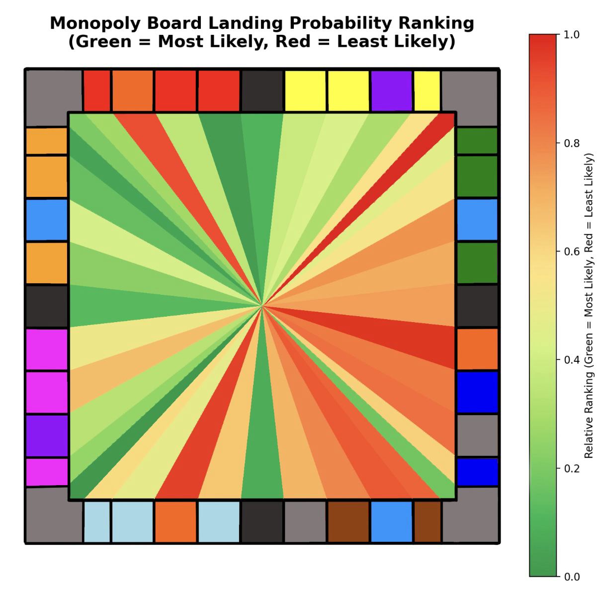

|
About |
Projects |
Publications |
About Me
|
I am a 4th-year dual-degree student at the University of Maryland (UMD) pursuing a B.S. in Computer Science with a specialization in Machine Learning and a B.A. in Chinese. I'm currently a student researcher in the CLIP Lab under Dr. Marine Carpuat, and I'm also affiliated with the Department of East Asian Languages and Cultures under Dr. Andrew Schonebaum. I was a Huayu BEST scholarship recipient studying at National Taiwan Normal University (NTNU) in 2023, and an exchange student at National Taiwan University (NTU CSIE) in 2025. At UMD, I'm also a member of the Gemstone Undergraduate Research Honors Program, a member of the Global Fellows program, and the cofounder of Tea Club at the University of Maryland.
My primary research interest is in multilingual NLP, with a focus on machine translation and model evaluation. Specifically:
- Machine translation with low-resource languages, with a particular emphasis on Classical Chinese (文言文)
- Evaluation of large language models (LLMs), particularly in detecting cultural and other biases
- Interdisciplinary application of NLP tools, including LLMs, to support research and innovation across the humanities, social sciences, and STEM fields.
|
Publications
-
Evaluating Evaluation Metrics for Ancient Chinese to English Machine Translation
Eric R. Bennett, HyoJung Han, Xinchen Yang, Andrew Schonebaum, Marine Carpuat
Proceedings of the Second Workshop on Ancient Language Processing (ALP 2025), pages 71–76
[Paper] |
[PDF]
|
|
Featured Projects
|
Mandarin Trainer
Full‑stack Mandarin vocabulary training website built with a React.js frontend and Firebase backend. The training interface uses a spaced‑repetition algorithm that promotes retention, and reflects the specific complexities of learning Chinese.
Try the website here, and learn more about the design process here.
|

|
|
|
|
Cognitive Alignment - Reducing Order Bias in MCQ Answering
A novel method to reduce order bias in multiple-choice question answering by large language models (LLMs). The technique decouples answer selection from answer order by comparing free-response LLM outputs with answer choices using embedding similarity. The method was evaluated across a subset of MMLU questions in English and Chinese and is shown to consistently reduce order bias across multiple metrics.
Coauthored with Su Bao during a joint research project at National Taiwan University. Find the paper here and the code here.
|
|
|
Classical Chinese Translator
Simple LLM-powered Classical Chinese translation interface capable of batch-translating novels at a time. Leaves markers throughout the original and translated text for easy reference between the two. Currently in use by UMD faculty.
Find the code here.
|
|
|

|
Asciify
A .png to .txt converter built in Python. Uses the euclidean distance between the pixels of ASCII characters and sections of the image to capture the shape and brightness of groups of pixels accurately. Works with both images and videos.
Find the code here, and try an interactive web-based version of the project here.
|
|
|
Vanishing Tic Tac Toe – Deep Reinforcement Learning
Research project exploring how deep reinforcement learning (DRL) can master complex strategy in a tiny environment. In Vanishing Tic Tac Toe, players' oldest pieces begin to disappear over time, introducing temporal planning into an otherwise simple game. We implemented the environment in OpenAI Gym, designed a suite of rule-based opponents, and trained a Double Deep Q-Network (Double DQN) agent against a curriculum of adversaries. Developed alongside an international team during my time at National Taiwan University in Taipei.
Find the paper here and the code here.
|

|
|
|

|
Monopoly Statistics
Exploring movement dynamics and economy in the board game Monopoly. Through a Monte Carlo simulation of 1,000,000 games, the project tracks landing frequencies, property profit rates, and the impact of chance and community chest cards.
Top Monopoly insight: The red and orange properties are most the most likely to be landed on!
Find the simulation code and analysis here.
|
|
|
Chris and Eric's Small Batch Pickles
My pickle company, founded in 2023 with Chris Moon. We craft unique, small-batch pickles with unique flavors and local ingredients alongside an amazing team. Supported by a $1,000 grant from the Dingman-Lamone Center for Entrepreneurship.
Check out our website here.
|

|
|
|
|
Sour Patch Kids
My first data science project from during COVID-19, where I was able to prove empirically that Sour Patch Kids recognizes Red and Blue are the best flavors by eating and counting 400 packs of candy. Did you know there are more blue and red Sour Patch Kids than the other colors?
Find the full report
here
and the code
here.
|
Awards
- UMD Omicron Delta Kappa Honor Society: University of Maryland Top Ten Freshman Award
- UMD School of Languages, Literatures, and Cultures: Tsung Chin Chinese Calligraphy Scholarship Recipient
- Boy Scouts of America: Eagle Scout Award
|
Last modified on 07/31/2025
|
|